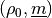
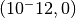
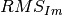
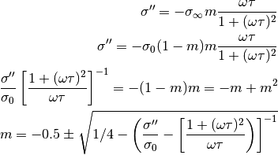

Starting Models¶
The Cole-Cole decomposition comprises a non-linear inversion problem and is dependent on the choice of starting parameters for . If these starting parameters produce a model response that is not close to the actual measurement data, then the inversion algorithm will have a smaller chance of properly fitting the data (the sensitivities that are used to compute model updates are only valid locally, i.e., close to the model parameters of a given iteration).
Starting models are selected by heuristics that somehow try to create suitable parameter set without requiring the full inversion problem that they are generated for.
The following methods can be used to determine starting models. A specific method can be selected by setting the environment variable DD_STARTING_MODEL to the corresponding integer number, i.e.:
DD_STARTING_MODEL=3 ccd_single ...
Note
Starting model nr 3 is used by default, and based on our experience works for most SIP signatures.
- (DD_STARTING_MODEL = 1): Flat starting model
- (DD_STARTING_MODEL = 2): [TODO] (Gaussian, center at peak of imaginary part)
- (DD_STARTING_MODEL = 3): [TODO] (Frequency decade wise approximation)
This page describes the implemented starting models
Model 1¶
This heuristic generates constant RTDs with in the chargeability range . It then computes the forward responses of all these (20) RTDs and chooses the one that has the lowest absolute difference in the imaginary parts:
min(np.sum(np.abs(tmim - mim)))
Model 2¶
This heuristic tries to find good starting parameters using a Gaussian m-distribution. This should only work well if we have only one peak in the data (imaginary/phase).
Model 3¶
This starting model heuristic implements the following procedure:
Compute mean values for for each data frequency decade.
Compute mean log10 relaxation times for each relaxation time decade.
Now compute a constant chargeability value for each frequency decade:
Use this chargeability value for the relaxation times related to each frequency decade
Norm the chargeabilities to 1
Sample the  values for scaling factors between 0 and 1
Choose the value with the lowest rms and take the entries next to it (on the scaling factor axis). Then fit a parabola through these three (scale, rms) points and determine the minimum of this parabola. Take this minium as the final scaling factor. Use 1 as an upper maximum, and a really small value above zero as a lower value.
Notes on possible conductivity extension¶
